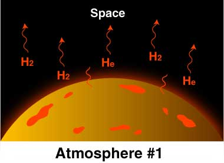
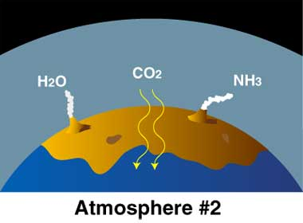
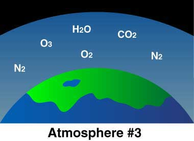
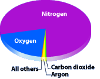

ကျွန်တော်တို့ လ အပါအဝင် အခြား ဂြိုဟ်တွေ ပေါ်မှာလဲ လေထု ရှိပါတယ်။ ဒါ့အပြင် အခြား ကြယ်တွေကို ပတ်နေတဲ့ ဂြိုဟ်တွေ ပေါ်မှာလဲ လေထု ရှိတဲ့ အထောက် အထားတွေ တွေ့ရှိ ထားပါတယ်။ ဒါပေမယ့် အခုထိ ရှာဖွေ တွေ့ရှိသမျှ ဘယ်ဂြိုဟ် ပေါ်မှာမှ ကမ္ဘာ့ လေထုလို သက်ရှိတွေ ရှင်သန်နိုင်ဖို့ သင့်တင့်မျှတတဲ့ ဓါတ်ငွေ့တွေနဲ့ ဖွဲ့စည်းထားတဲ့ လေထုကို ရှာဖွေ တွေ့ရှိခြင်း မရှိသေးပါဘူး။
ဥပမာ ဗီးနပ်စ် (သောကြာဂြိုဟ်) ပေါ်က လေထုဟာ အလွန် သိပ်သည်းပါတယ်။ မားစ် (အင်္ဂါဂြိုဟ်) က လေထုကျတော့လဲ အရမ်း ပါးလွန်းနေ ပြန်ပါတယ်။ ဒီဂြိုဟ် နှစ်ခုလုံးရဲ့ လေထုထဲ မှာလဲ ကျွန်တော်တို့ ရှူနေတဲ့ အောက်ဆီဂျင် ပါဝင်ခြင်း မရှိပါဘူး။
ဒါဆို ကမ္ဘာပေါ်က ဒီလို ထူးခြားတဲ့ ဝိသေသ တွေနဲ့ ပြည့်စုံတဲ့ လေထုက ဘယ်လို ဖြစ်လာတာ ပါလဲ။
သိပ္ပံ ပညာရှင် များရဲ့ သုတေသန ပြုချက် အရ လက်ရှိ ကျွန်တော်တို့ ရှူနေတဲ့ ကမ္ဘာ့ လေထုဟာ အရင် မူလ အော်ရီဂျင်နယ် လေထု မဟုတ်ဘူး လို့ ဆိုပါတယ်။ သိပ္ပံ ပညာရှင် များရဲ့ အဆိုအရ အခု လေထုဟာ ကမ္ဘာရဲ့ တတိယမြောက် လေထု ဖြစ်ပါတယ်။
ပထမလေထု
ကမ္ဘာ စပြီး ဖြစ်စ အချိန်က ကမ္ဘာ့ လေထုဟာ ဟိုက်ဒရိုဂျင် နဲ့ ဟီလီယံ ဓါတ်ငွေ့တွေနဲ့ အဓိက ဖွဲ့စည်း ထားလိမ့်မယ်လို့ ခန့်မှန်း ကြပါတယ်။ ဘာကြောင့်လဲ ဆိုတော့ ကမ္ဘာရယ်လို့ ဖြစ်လာဖို့ နေရဲ့ ပါတ်ခြာလည်မှာ လှည့်ပတ်နေတဲ့ ဓါတ်ငွေ့တွေနဲ့ ဖုန်မှုန့်တွေ ထဲမှာ ဒီ ဟိုက်ဒရိုဂျင် နဲ့ ဟီလီယံ ဓါတ်ငွေ့တွေက အဓိက ပါဝင်တာ ကြောင့်ပါ။
ဒုတိယလေထု
ကမ္ဘာဂြိုဟ်ရဲ့ ဒုတိယမြောက် လေထုကတော့ ကမ္ဘာမြေရဲ့ အတွင်းထဲက ထွက်လာတာ ဖြစ်ပါတယ်။ ကမ္ဘာဦးပိုင်းမှာ ကမ္ဘာပေါ်မှာ မီတောင်တွေ အမြောက်အများ ရှိခဲ့ပါတယ်။ ဒီ မီးတောင် တွေ ပေါက်ကွဲ မှုကနေပြီး- ရေနွေးငွေ့ (H2O) – ကမ္ဘာ့ အတွင်းပိုင်းမှာ ပိတ်မိနေတဲ့ ရေတွေဟာ ဆူပွက်ပြီး ရေနွေးငွေ့ အဖြစ်နဲ့ လေထုထဲကို ထွက်လာပါတယ်။ ရေမှာ အောက်ဆီဂျင် အက်တမ် တစ်လုံး နဲ့ ဟိုက်ဒရိုဂျင် အက်တမ် နှစ်လုံး ပါဝင်ပါတယ်။
- ကာဗွန်ဒိုင် အောက်ဆိုဒ် (CO2) – သူ့မှာတော့ ကာဗွန် အက်တမ် တစ်လုံး နဲ့ အောက်ဆီဂျင် အက်တမ် နှစ်လုံး ပါဝင် ပါတယ်။
- အမိုးနီးယား (NH3) – သူ့မှာတော့ နိုက်ထရိုဂျင် အက်တမ် တစ်လုံးနဲ့ ဟိုက်ဒရိုဂျင် အက်တမ် ၃ လုံး ပါရှိပါတယ်။

တတိယလေထု (လက်ရှိကမ္ဘာ့လေထု)
ဒုတိယ လေထုထဲက ကာဗွန် ဒိုင် အောက်ဆိုဒ် က ရေမှာ အလွယ်တကူ ပျော်တာမို့ သမုဒ္ဒရာ ရေထုထဲမှာ ပျော်ဝင် သွားပါတယ်။ ဒီကာလ လောက်မှာပဲ ပင်လယ် ရေထဲမှာ ရိုးရှင်းတဲ့ ကမ္ဘာဦး သက်ရှိ ပိုးမွှားတွေ ပေါက်ပွား လာပါတယ်။ ဒီ သက်ရှိ ပိုးမွှား လေးတွေဟာ နေရောင်ခြည်ရယ်၊ ကာဗွန်ဒိုင် အောက်ဆိုဒ် ရယ်ကို အသုံးချပြီး အစာ ချက်လုပ်ပါတယ် (အခု အပင်တွေ လိုပေါ့)။ ဒီ အစာချက်လှုပ်မှုမှာ စွန့်ပစ် ပစ္စည်း အနေနဲ့ အောက်ဆီဂျင် ထွက်လာပါတယ်။နှစ်သန်းပေါင်း များစွာ ကြာတဲ့ အခါ လေထုထဲမှာ အောက်ဆီဂျင် တဖြည်းဖြည်း များလာပါတယ်။ ဒီ ဖြစ်စဉ် အတွင်းမှာ အောက်ဆီဂျင် ပမာဏ တဖြည်းဖြည်း များလာသလို လေထုထဲက ကာဗွန်ဒိုင် အောက်ဆိုဒ်ကလဲ တဖြည်းဖြည်း နည်းလာပါတယ်။

နှစ်သန်းပေါင်း ရာပေါင်းများစွာ ကြာပြီးတဲ့ နောက်မှာတော့ အခု ကျွန်တော်တို့ ရူနေတဲ့လေ၊ အသက်ရှင် နေထိုင်နေတဲ့ လေထု ဖြစ်လာပါတယ်။ ဒါကို တတိယ လေထု (Third atmosphere) လို့ သိပ္ပံ ပညာရှင် တွေက ရည်ညွှန်း ပြောဆို ကြပါတယ်။
ကမ္ဘာ့လေထုရဲ့ဖွဲ့စည်းပုံ
ကမ္ဘာ့လေထုရဲ့ ၇၈ % က နိုက်ထရိုဂျင် ဓါတ်ငွေ့တွေ ဖြစ်ပါတယ်။ ၂၁ % ကတော့ အောက်ဆီဂျင် ဖြစ်ပါတယ်။ ကျန်တဲ့ ၁% မှာ ကာဗွန်ဒိုင် အောက်ဆိုဒ်က ၀.၀၃၈၅ % ပဲ ပါ့ဝင်ပါတယ်။လက်ရှိ ကမ္ဘာ့ လေထုဟာ သက်ရှိတွေ ပေါက်ဖွား ရှင်သန်ဖို့ သင့်တော်တဲ့ လေထုပဲ ဖြစ်ပါတယ်။ ထူးခြားတာကတော့ ဒီ သက်ရှိတွေ နေထိုင်ဖို့ လေထုကို ဖန်တီးတာဟာ သက်ရှိတွေ ကိုယ်တိုင်ပဲ ဖြစ်တယ် ဆိုတာပါပဲ။
